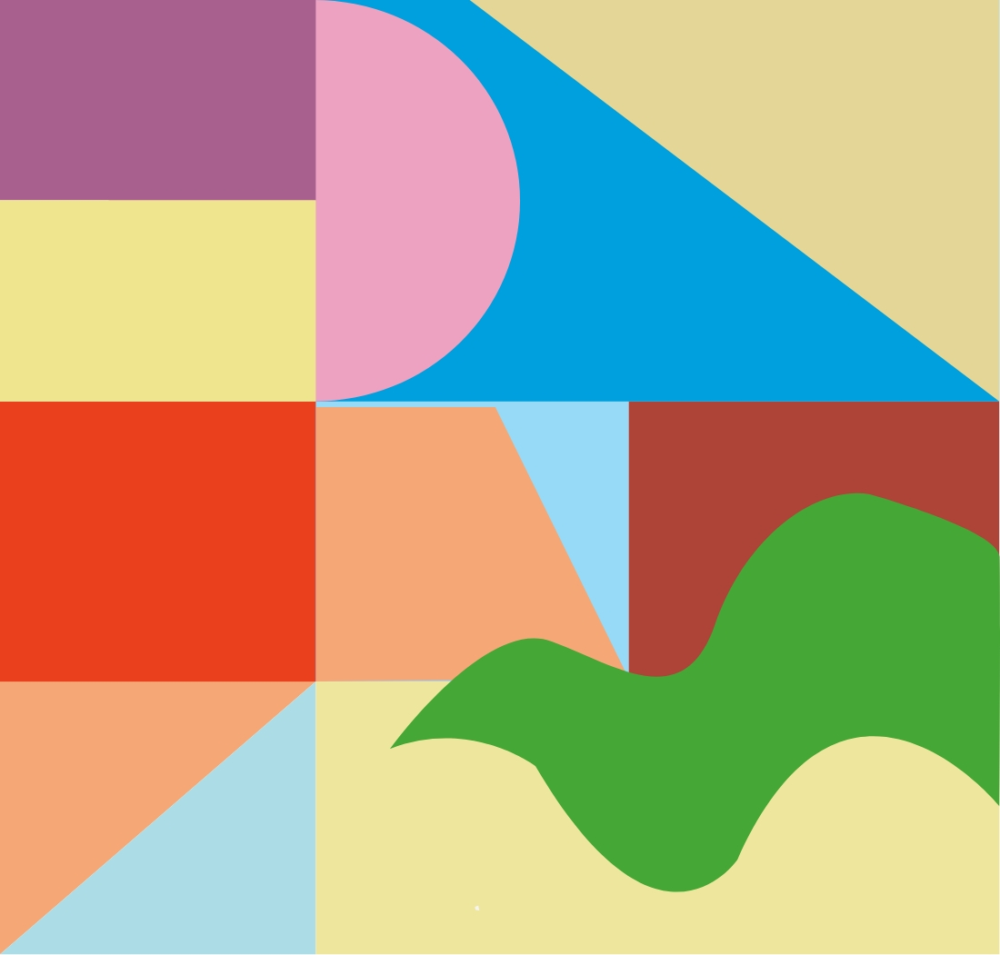
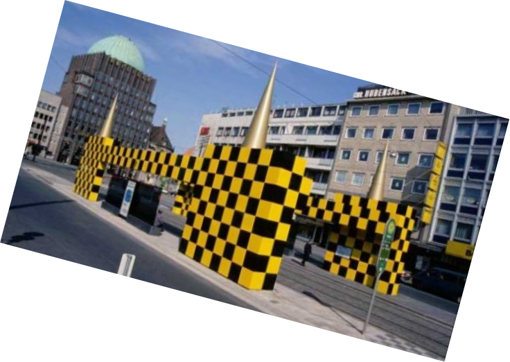

Alessandro Mendini
INTRODUCE
DESIGN
ARCHITECTURE
INTERVIEW

ARCHITECTURE
그로닝거 뮤지엄
하노버 버스 정류장

비블로스 아트 호텔 빌라 아미스타
비블로스 아트 호텔에서 멘디니는 특정 디자인에 머물지 않고, 공간과 가구, 소품, 텍스타일, 색채
등에 이르기까지 놀랍게 표현하고 조화를 이뤄냈다. 건물의 모든 것이 알레산드로 멘디니의 손에 의
해 투숙객을 오감의 극한으로 이끌어냈다. 멘디니만이 해낼 수 있는 고난도의 융합적인 디자인이어
서 한 번쯤은 직접 체험해보길 바란다. 최경원(성균관대학교 디자인학과 겸임교수, 홋 컬렉션 대표)